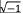
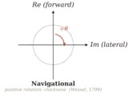
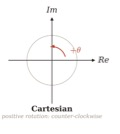
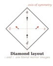
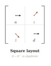
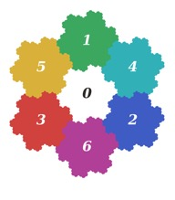
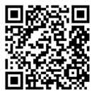

The Beauty of Complex-Valued Geometry and Arithmetic
Interactive Visualizations Powered by AI
Anatoly Ressin
Blockvis SIA, BlockvisLabs
Latgales iela 240-3, room 504, Riga, LV-1063, Latvia
anatoly@blockvis.com
Keywords: History and Technical Debt of Mathematics, Eisenstein Integers, Gosper Island, Positional Coding, GQ128 Format, AI Visualization
In 1831, reflecting on nearly two centuries of confusion around the
square root of minus one, Gauss (1831) remarked that the subject had been “enveloped
in mystery and surrounded by darkness” — and he blamed not the mathematics
but the words. Had +1, −1, and 
The Axes Were Drawn Sideways


The complex plane, first given geometric form by Wessel (1799), carries a telling origin: Wessel was a Norwegian land surveyor, and his motivation was the analytic representation of direction. In a surveyor’s world the natural orientation is navigational — forward is up, lateral is sideways — and positive rotation follows the clock. Yet the Argand diagram that descended into textbooks chose the Cartesian orientation instead, with the real axis horizontal and the positive rotation running counter-clockwise. Restore Wessel’s frame: point the real axis upward and the imaginary axis to the right, and the positive rotation from Re to Im — unchanged algebraically — becomes clockwise. The complex exponential eiθ now turns with the hands of a clock, with a compass swinging from north to east, with a ship’s heading falling to starboard. Gauss’s direct and lateral are recovered as forward and sideways. The angular debt, inherited from Cartesian diagrams rather than from the geometry itself, evaporates.
A Mirror, Not a Square


The matrix representation of a complex number carries a second hidden symmetry. In the standard layout, a N×N matrix is a square with its diagonal running from upper-left to lower-right, and the Hermitian condition H = H† appears as a purely algebraic statement. Stand the matrix on its corner as a diamond, with the diagonal now vertical. The real-valued diagonal entries lie on the axis of symmetry; the off-diagonal entry at (i, j) and its conjugate partner at (j, i) fall into literal mirror-image positions across that axis. Hermitian symmetry, invisible in the square layout, becomes a geometric reflection visible to the eye. A child once asked why a mirror swaps left and right but not up and down; the answer is that it does neither — we impose the swap by turning around. The standard matrix layout performs the same rotation, hiding a symmetry that was always there.Optimal Lattice For Complex Numbers
Gauss’s 1831 treatise, besides containing his famous complaint, also introduced the Gaussian integers ℤ[i], the square lattice encoded by the 90° convention. Yet this lattice is not geometrically optimal: the hexagonal lattice is denser, with six equidistant neighbours per point rather than four. The correct arithmetic object is the ring of Eisenstein integers ℤ[ω], where ω = e2πi/3 satisfies ω² + ω + 1 = 0, introduced by Eisenstein (1844) in his proof of cubic reciprocity (Ireland and Rosen, 1990). Its norm N(a + bω) = a² − ab + b² is the natural quadratic form of 60° geometry, and like ℤ[i] it is a Euclidean domain. The hexagonal lattice is not a generalisation of the Gaussian square lattice — it is a correction of it.
Seven Digits for the Complex Plane
Knuth (1960), then a high-school contestant, observed that an imaginary number could serve as the base of a positional numeral system — a quater-imaginary base 2i for the Gaussian integers. The same idea on the Eisenstein lattice produces something more elegant still. Choose β = 2 − ω; then N(β) = 2² − 2·1 + 1² = 7, so there are exactly seven residue classes modulo β and the digit set is D = {0, 1, 2, 3, 4, 5, 6}. Every Eisenstein integer admits a unique finite representation:
z = dn · βn + dn−1 · βn−1 + ··· + d0, dk ∈ D (1)
Addition, multiplication, and carrying are geometric operations on the hexagonal lattice. The talk presents the full addition and multiplication tables for D, and a worked column-arithmetic example with hexagonal carries — an operation a child fluent in decimal long addition could follow.
The Unit Interval That Is a Fractal

What does the “unit interval” of this system look like? In decimal, all infinite digit strings 0.d1d2… fill [0, 1]. The analogous attractor in base (2 − ω) is something else entirely: a fractal of seven self-similar copies at scaling factor 1/√7, discovered by Bill Gosper in 1973, first described publicly by Gardner (1976) in his Scientific American column, and later named the Gosper island by Mandelbrot (1977). It tiles the plane by translation, with no gaps, no overlaps, and a boundary nowhere smooth. It is the natural fundamental domain of complex arithmetic on the hexagonal lattice: the shape the unit interval was always trying to be.GQ128 and the Live Demonstration
The talk concludes with the first public introduction of GQ128, a complex floating-point format whose mantissa lives in ℤ[ω] rather than ℤ, achieving isotropic quantization error — a property structurally impossible on the square lattice of standard IEEE 754 complex representation. All concepts are demonstrated through interactive visualizations generated in real time by AI, with no conventional slides.
The research is supervised by Prof. Dr.Math. Jekaterina Gromova & Prof. Dr.Phys. Dmitry Bocharov.
References
Eisenstein, G. (1844) Beweis des Reciprocitätssatzes für die cubischen Reste in der Theorie der aus dritten Wurzeln der Einheit zusammengesetzten complexen Zahlen. Journal für die reine und angewandte Mathematik, 27, 289–310. https://www.degruyterbrill.com/document/doi/10.1515/crll.1844.27.289/html
Euler, L. (1748) Introductio
in analysin infinitorum. Lausanne: Marcum-Michaelem Bousquet.
https://scholarlycommons.pacific.edu/euler-works/101/
Gardner, M. (1976)
Mathematical games: In which “monster” curves force redefinition of the word
“curve”. Scientific American, 235(6), 124–129.
https://www.scientificamerican.com/article/mathematical-games-1976-12/
Gauss, C.F. (1831)
Theoria residuorum biquadraticorum, Commentatio secunda. Göttingische
gelehrte Anzeigen, 64, 169–178.
https://www.sophiararebooks.com/pages/books/6172/carl-friedrich-gauss/theoria-residuorum-biquadraticorum-commentatio-prima-secunda
Ireland, K. and Rosen, M.
(1990) A Classical Introduction to Modern Number Theory, 2nd ed. New
York: Springer-Verlag.
https://link.springer.com/book/10.1007/978-1-4757-2103-4
Knuth, D.E. (1960) An imaginary number system. Communications of the ACM, 3(4), 245–247. DOI:10.1145/367177.367233. https://dl.acm.org/doi/10.1145/367177.367233
Mandelbrot, B.B. (1977) Fractals:
Form, Chance, and Dimension. San Francisco: W.H. Freeman.
https://archive.org/details/fractalsformchan0000mand

Wessel, C. (1799) Om directionens analytiske betegning. Nye samling af det Kongelige Danske Videnskabernes Selskabs Skrifter, 5, 469–518.